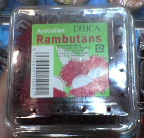

日々、想ふ
〜過去感じたことがつれづれと〜
（できるだけ最大化してお読みください）
日々、想ふ
ま〜わる〜ま〜わる〜よ〜寿司は〜回る〜。４/１５
明日は俺の誕生日ですよ、タケユキです。
でも明日の土曜日はバイトなんで
今日学校終わってから寿司食いに行ってきました、回転寿司だけど。
久しぶりに回転寿司行ったけど回転寿司ってのはいろんなのが回ってんのね。
とりあえず最初は流れてくる寿司をいろいろ見てたんだけど
寿司はもちろんハンバーグとかプリンとかケーキとか、
中でもちょっとしなびれたマンゴーのデザートがおもしろかった。
お前は食ってもらう気はあるのかって聞きたくなるくらいしおれてた。
他にネタがシャリの上から落ちた寿司も回ってた。
それただの酢飯と刺身やんけ。
んでいろんなネタに突っ込みながら１時間ちょっとお店にいたんだけど
お腹いっぱいになって清算しようと席を立ったら、
横を通り過ぎていくマンゴーのデザート。
・・お前まだ回っとったんかい！
今日の追伸：明日は俺の誕生日ですよ。
昴。４/１４
昨日の「気分は上々スペシャル」を見てから谷村新司にはまっています。
わ〜れは〜行く〜♪ 蒼白き〜頬〜のま〜まで〜♪
わ〜れは〜行く〜♪さらば〜〜昴〜〜よ〜〜♪タケユキです。
というわけで学校で俺が音楽聴いてる時
イヤホンから谷村新司の渋い歌声が大音量で流れています。
なので俺に話しかけるときは大きな声でお願いします。
寝酒飲んで頭くらくらなので、おやすみなさい〜。
今日の音楽：たまに鈴木あみも流れてます。
軽んじる目線。４/１３
今日から新入生も授業開始です。
というわけで食堂の混雑がありえんかった、キレかけた。
ベンチに座って昼食べてたんだけど、周りはありえんくらい人多い。
友達と「なんでこんなに多いんや、別の食堂行けよなー」って話してたら
となりに新入生らしき二人組が座ってきた。
わざわざこっちのベンチ来るんじゃねーよって思ってたら
その二人組の片方がカツカレーを箸で食ってた。
人が多くてカレーコーナーに置いてあるスプーンがなくなってたからなんだろうけど
隣の定食カウンター行ったらスプーンたくさんあるだろ、
そういうおもしろプレイはやめてくれ、タケユキです。
というわけで今日から般教の授業が始まりました。
普通３回生になったら般教なんてものはなくなるもんなんだろうけど
俺は
なぜか英語の再履があるため朝早く起きて一限から学校行きました。
同じ英語の授業を取ってる友達がいたから多少気楽に行ったんだけど
いざ教室に入るとそこにいたのはおそらく全員再履の学生。
部屋の負のオーラが半端ない、いや半端ねえ。
どうやら再履修生専用の英語の授業みたい。
先生もそれを知ってるせいか授業の最初に英語のテープ流して、
「まあこの速度（の英語）で理解しろとは言いません」
俺らはどんだけダメ学生の扱いやねん。
今日のダメ度：まあ再履ですから。
いや非常識だろ。４/１２
「オペレーティングシステム」の授業の教科書は
今生協には陳列されてません。
でも生協側で発注自体はしてるそうなので
入荷まで待っとけばいいみたいです以上業務連絡でした、タケユキです。
今午後１１時半過ぎです。
プルルルルルルルルルル
来訪者を知らせるベルが鳴る。
今日は誰も夜うちに来るって言ってた友達いないはずなのに。
誰だって思って出たら
「夜分遅くにすいません、○○新聞の者なんですが・・」
新聞の勧誘が来た。夜の１１時半に。
ノルマが大変なんか知らんけど夜遅すぎやろ。
今日の勧誘：５秒で断りましたが。
お腹痛いんですよ。４/１１
学校始まりました。
普段の学校となんら変わりない一日を過ごしたはずなんだけど
学校から帰ってきてひどく腹痛に襲われています、タケユキです。
変なもの食べた記憶もないのに
家帰ってからトイレ、ベッド、トイレ、ベッドの往復。
わしゃ病人か。
今日の気温：昨日と違って寒すぎ。
海を越えて、再会。４/１０
なんか部屋がめっさ暑いんですけど、
春ってのはこんなのじゃないと思うんですよ、タケユキです。
天気予報は余裕ぶっこいて雨だって言ってたのに
いざ起きてみると超暑い、てか晴れてるやんけ。
てなわけで引きこもるのもどうかと意味もなく出かけてみました。
とりあえず食料調達しにダイヤモンドシティに行って
食料品コーナーでうろうろしてたらあるものを見つけた。

ランブータン。
見つけたのはオーストラリア産だったんだけど
このフルーツ、去年の夏にタイに行ったときに
電車の向かいに座ってたおばあさんがくれて食べたやつだ。
タイの路上屋台ではビニール袋いっぱいに詰めたやつが
確か１００バーツ（約３００円）かそこらで売ってた。


上の写真がタイで食ったランブータン。
見た目ちょっときしょいけどけっこうおいしかったし
なつかしいなーって思いがあって買ってみようかと値札を見たら、
４個で３９８円。
２秒で買うの諦めた。
今日のランブータン：試食だけ食べまくってきました。
春の終わりに。４/９
今日は用事があったんでちょっと寝屋川まで走ってきました、
今日の出来事はそれくらいですか、タケユキです。
花見行こう花見行こうと思ってたんだけど
明日から雨。桜散ってしまうやんけ。
んでも文句言ってもしかたないんで寝る、たぶん明日は引きこもり。
この休みが終わったら学校開始。
結局この春休み何したって言われたら
二輪の免許取ってバイク買ったくらい。
明日あたりにでもこたつ撤去するか。
今日のこたつ：いい加減暑い。
肌荒れ。４/８
バイトでした、また手が荒れてきたんですけど、タケユキです。
というか手が荒れてひび割れたところから血が出てきました。
これって荒れてるとかいうレベルじゃないと思うんですけど。
とりあえず明日やってたら病院行ってみよ。
今日のドタキャン：飲み会。
懐郷。４/７
先月からロサンゼルスに留学してる友達篤史がブログを始めました。
向こうの友達が篤史(ATSUSHI)のTSUを発音できんらしく
ATSUSHI − TSU が名前のきっかけになったブログ
Ash's life in LAを
新しくリンクに追加しました、タケユキです。
今日は新年度履修指導の日、要するに登校日。
んで学校終わって昼飯を学食で食べてたんだけど、
ありえん。
というか許されん事態になってた。
カレーライスが２４０円から２８０円に値上がりとは何事じゃーっ！！！
カレーライスだけじゃなくカツカレーも２９０円から３８０円に値上がりしてた。
許されると思っているのか。
一緒に昼飯食ってた友達とキレてた。
それとはちょっと話変わるんだけど
外のベンチで昼飯食ってたら横に座ってた人が
うちの学生じゃないらしかった。
大学ってのは誰でも入ってきたりするから
別に
それくらいじゃ「へえ〜そう」で終わるんだけど
話によるとその人は広大生らしい。
このサイトはほとんどが広島出身者か大阪の人が見てるし（たぶん）
広大生も何人かここ見てるだろうから知り合いだったらおもしろいし書いときます、
１５の工学部１類の人で阪大生の彼女と遠距離やってる人が
彼女に会いに阪大に来てました、
その人が阪大で話した見知らぬ広島人ってのは俺ですよ、
ここ見てる人でその人と知り合いがいたらおもろいんだけどなあ。
あ〜〜、広島帰ってないなあ。。。。
今日の拾得物：指輪。
バイク日和。４/６
いい天気だったんでバイクで走ってきましたよ。
空港行ってダイヤモンドシティ行って（ソレイユじゃない）、
業務用スーパー行って帰ってきました。
でもドライブウェイを二輪が走れないのはずるくないですか、タケユキです。
明日はクラス懇談会です。
うちの学部は朝９：００にとりあえず基礎工棟に行けって話。
遅刻したらエライことになりそうなのでさっさと寝ますっ。
今日の空港：飛行機超でかい。
閉店後。４/５
鈴木あみの曲を聴きながら更新中、
鈴木亜美じゃないですよ鈴木あみの頃の曲です。
なつかしさがたまらなくこみ上げてくるんですけど
これはまさしく青春の響きですよね。
ビートゥギャーザッビートゥギャーザッ！！
キモいとか言わないでください今日の更新始まりますよ、タケユキです。
というわけで（どういうわけで？）バイトの話。
いつも通り仕事してお客さんの会計もすませて
あとは客が帰って片付けたら終わりの状態。
閉店時間を５分、１０分・・２０分過ぎてもなかなか帰らない。
お前ら帰らねえとやることねえんだよ俺ら帰れねえじゃんよ、
みたいな気持ちは顔には出さず客が帰るの待ってたんだけど、
なかなか帰らない。
閉店時間が３０分過ぎてやっと席立って帰る時俺に
「ほんと長居しちゃってごめんなさいね〜」
自分で分かってんならさっさと帰れ。
今日の感想：ほんとバイトって我慢。
おどかしやがって。４/４
そういえば今年のペナントレース、今カープ首位なんですよね、
まだ３戦しかしてないけど首位は首位、がんばってほしいもんです、タケユキです。
晩ご飯にキムチ食べました。
晩ご飯はキムチとご飯だけでした。
んでご飯食べ終わってからだらだらして、
そろそろ寝ようと歯を磨きに洗面台行って口開けたら、
歯、血だらけ。
「んでやのっ！？」
って驚いてみたがよく見たらキムチの赤いのがついてただけだった休日。
今日の休日：土日とかじゃなくてバイトのない日が休日
ふう。４/３
四月なんです、マンション・アパートで言ったら入居の時期です。
学生マンションとかは入居してきてもあんまり挨拶とかには来ないんですが
今日午前中に二人あいさつに来ました（去年は一人もこなかった）。
って言っても来客を告げるピンポンで目を覚ました俺は
眼鏡もかけず頭ボサボサ寝巻き用ジャージで出迎えに行ったので
今思うとかなり後悔の念が残ります。
でも人と環境にやさしいエコロジータオルよりも
お菓子の詰め合わせの方が俺はうれしかったです、
エコロジータオルて、タケユキです。
今日はとりあえず部屋の掃除をします。
やっと９連勤が終わり明日はバイト休み。
明日はのんびり過ごしたい。
明後日からまた５連勤ですから。
もうバイトはいいから休みをくれ。
今日の一言：でもお金いるんだよなあ。
節約しないと。４/２
天気が中途半端ですよね、タケユキです。
今日もバイトでした。
うちのバイト先のレストランは飲み放題もやってます。
飲み放題ってのはたいていが９０分とか２時間の時間制限なんだけど
うちのお店も例に漏れず２時間の飲み放題になってます。
んでも客は酔ってくると飲み放題なのをいいことに調子に乗って
やれビールをジョッキで２つ持ってこいだの
やれ焼酎をボトルで持ってこいだの、好き勝手言いやがるんですよね。
宴会も２時間近くが経過してきて
飲み放題のラストオーダー聞きに行きました。
ここでもやっぱり客は調子に乗って好き勝手言ってくるんですよね。
幹事の人がまともだったらまだいいんだけど
今日のは幹事も酔って調子に乗って
お客が「焼酎をロックで１つ」
って言ったら
またこの酔っ払い幹事が
「いやロック２つくらいいっちゃえー！」とか言ってんですよね。
そこは俺が我慢しながら
「すいません〜お一人様１ドリンクでお願いしてるんですよ〜」
って伝えたらこのアホ幹事が
「じゃああたしとこの人でロック２つお願い〜」
嘘つけ、お前絶対飲まねえだろ。
まあラストオーダーで頼まれたドリンク、
半分も出しませんでしたけどね。
今日の帰り道：路面が濡れててちょっと危ない。
贈り物。４/１
そんな四月一日新年度初日も俺はバイトですよ、タケユキです。
おかんから荷物が届きました。
中身はいつもの通り米とかの食べ物。
それと今回はバイク乗るんだからとお守りも入ってました。
親からすると俺なんかがバイクに乗るのは危ないっていうんでしょう、
ええ俺も危ないと思います。
心配してくれるのはうれしいんですが
バイクにつけろって言ってるこのお守り、
これ車用ですよ？
ウインドウにつけるためのこれついてるし。

これ
バイクにつけるには多少の無理がありませんか。
今日のトップページ：
ここですよ。